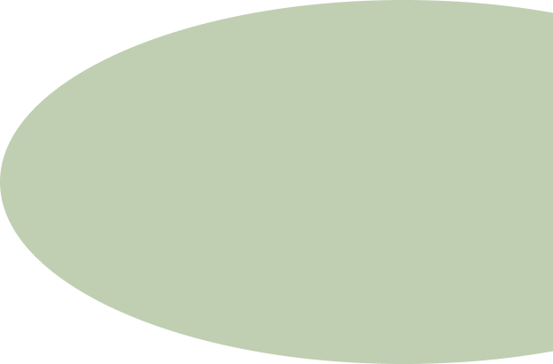
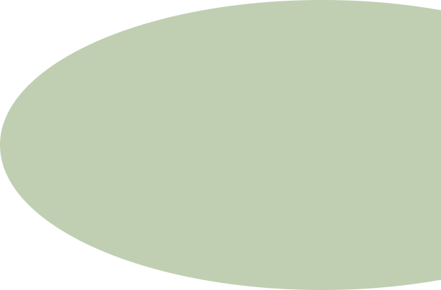

Introdução a Natureza:
A natureza é um conceito amplo e multifacetado que abrange todos os elementos e fenômenos do mundo físico que não são criados pela intervenção humana. Inclui uma vasta gama de componentes, desde os minúsculos organismos microscópicos até os gigantescos ecossistemas que cobrem a Terra. A natureza está intrinsecamente ligada à nossa existência e tem sido fonte de fascínio, inspiração e estudo ao longo da história humana.


Elementos da Natureza:
Flora e Fauna: As plantas e os animais constituem a biota da Terra. A flora abrange todas as espécies de plantas, desde as árvores majestosas das florestas tropicais até os minúsculos musgos das tundras árticas. A fauna inclui todos os animais, desde os grandes mamíferos até os insetos e microorganismos.
Ecossistemas: Os ecossistemas são comunidades de organismos interagindo entre si e com o ambiente físico. Exemplos incluem florestas, oceanos, desertos e pântanos. Cada ecossistema tem uma dinâmica própria, com cadeias alimentares e ciclos de nutrientes.
Elementos Abióticos: Estes são os componentes não vivos do ambiente natural, como o solo, a água, o ar e os minerais. Eles são essenciais para a sobrevivência dos organismos vivos e influenciam diretamente a composição e a estrutura dos ecossistemas.
Os elementos que habitam na natureza referem-se à diversidade de seres vivos e não vivos que compõem o ambiente natural. Esses elementos podem ser classificados em diferentes categorias, incluindo seres vivos (bióticos) e componentes não vivos (abióticos).

.png) 

Importância da Natureza

A natureza desempenha um papel crucial na sustentação da vida na Terra. Ela fornece os recursos necessários para a sobrevivência dos seres vivos, como água, ar, alimentos e materiais para abrigo. Além disso, a natureza mantém um equilíbrio ecológico que é vital para a saúde do planeta. Os ciclos naturais, como o ciclo da água e o ciclo do carbono, regulam o clima e a qualidade do ar e da água.
T
Ó
P
I
C
O
S
- Suporte à Vida
- Recursos Naturais
- Regulação Climática
- Saúde e Bem-Estar Humano
- Conexão Humana com a Natureza
- Valor Econômico
- Educação e Pesquisa
- Cultura e Espiritualidade
- Preservação do Futuro
Conservação e Sustentabilidade
A conservação e a sustentabilidade da natureza são fundamentais para garantir a saúde e o bem-estar do planeta e de todas as suas formas de vida. Estas práticas visam proteger os ecossistemas, preservar a biodiversidade e utilizar os recursos naturais de maneira que eles possam ser mantidos para as futuras gerações.
Reconhecendo a importância vital da natureza, movimentos de conservação e sustentabilidade ganharam destaque nas últimas décadas. A conservação busca proteger e preservar os recursos naturais e os ecossistemas, enquanto a sustentabilidade visa garantir que as necessidades das gerações presentes sejam atendidas sem comprometer a capacidade das gerações futuras de atender às suas próprias necessidades.


Resumindo...
A natureza é a totalidade dos ecossistemas e elementos vivos e não vivos que compõem o ambiente natural do planeta Terra. Ela inclui uma vasta diversidade de organismos, desde microrganismos até grandes mamíferos, bem como elementos físicos como solo, água, ar e clima. A natureza desempenha um papel fundamental na sustentação da vida, proporcionando recursos essenciais, regulando processos ambientais, e influenciando a saúde e o bem-estar dos seres humanos e de todas as outras formas de vida.
A natureza é a base da vida na Terra, fornecendo recursos essenciais, regulando processos climáticos e sustentando a biodiversidade. A preservação e conservação da natureza são cruciais para garantir um futuro saudável e sustentável para todas as formas de vida. É imperativo reconhecer a importância da natureza e implementar práticas e políticas que promovam a conservação e a sustentabilidade para garantir que os recursos naturais permaneçam disponíveis e que os ecossistemas continuem a prosperar.